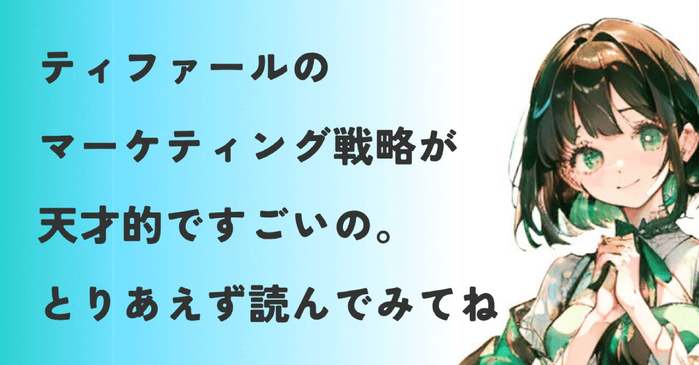
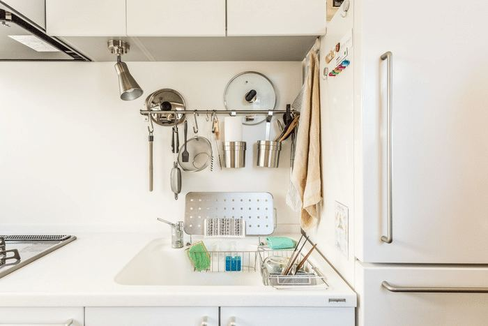
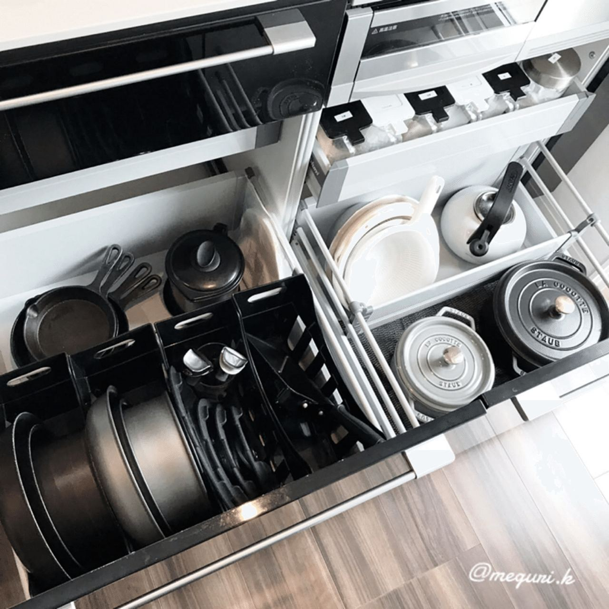
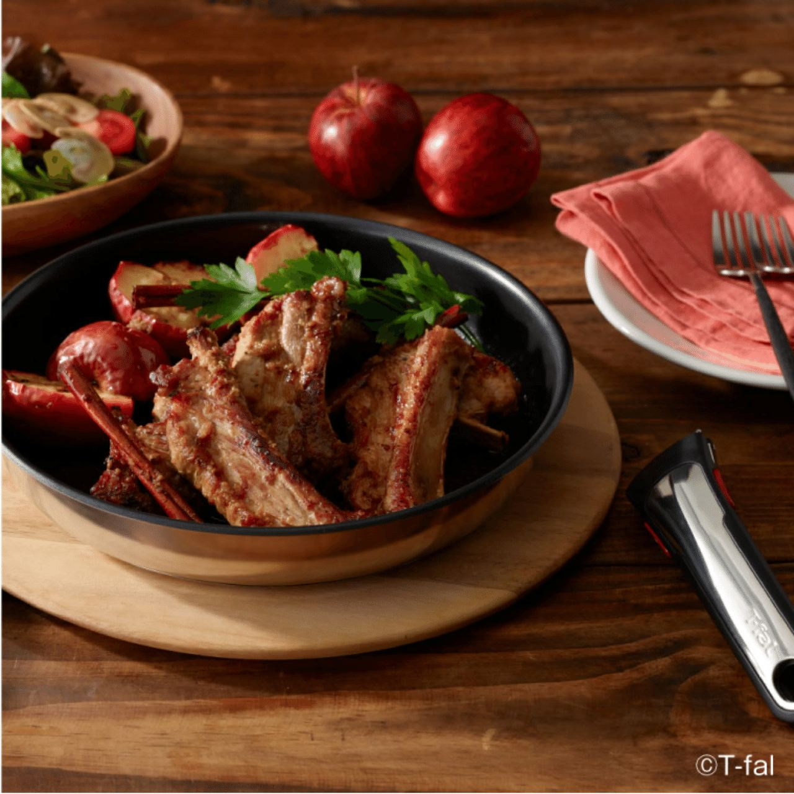

ただいまnoteでお題が出てます▼
https://note.com/info/n/n8c2c7f2c5c89
何だか面白そう！
このお題をを見た時、ちょうどキッチンにいたんですよね。
夜ご飯つくるぞー！と思ってて、
目に入ったのがこれでした▼
*Amazonアソシエイトリンクです
取っ手の取れるティファールでおなじみ、
インジニオシリーズですね。
もしかしてあなたも使ってますか？
これ、実は高度なビジネス戦略がモリモリ詰め込まれた、とんでもないシロモノなんです。
取っ手も取れる〜♪ティファール♫
ってフレーズもありましたよね。
今もCMでちゃんと使われてます。
https://youtu.be/Lec5biWdaoo?si=6Hz3mvHixRz91x-3
調理した人なら、
フライパンや鍋の置き場所に困ること
って一回はあるのではないでしょうか。
限られたキッチンの収納と料理の手間。
誰もが諦めていた慢性的な不満を解消した、
画期的な商品を作り上げたティファール。
ヒット商品を支えた強力なマーケティング戦略について、語ってみました。
生まれた背景は、パリの狭いアパルトメント
従来の調理器具市場は、焦げ付かない技術や熱伝導率といった、調理中の性能を競うのが主流でした。
焦げ付くと料理はまずくなるし、こびりついて取れない。性能の高さって本当に大切。
しかし、実は調理の前後に大きな不満が潜んでいたのを見抜いたのが、ティファールのすごいところ。
フランス生まれのティファール。
首都のパリは古くて狭い住宅(アパルトメント)が多く、キッチンの収納も限られていました。
以下の記事にわかりやすい解説があります▼
https://kurashi.com/brandsolution/info/12385
フライパンも鍋も重ねれば傷がつき、単独で置けばデッドスペースを生む。
それに作った料理は、保存や食卓に出す前に、別の器に移し替える必要がありました。

ワンルームのキッチンともなれば、
盛り付ける皿を置く場所は無いところも多い。
狭いスペースで収納に苦労する
料理を別の皿に移し替える
誰もが諦めて受け入れていた無意識の不便さこそ、ティファールが見抜いた巨大なビジネスチャンスでした。
これぞまさにスタートアップに必要な、
イノベーションを生み出す思考。
機能の改善ではなく、調理器具の役割そのものを変える。
ここに目をつけたティファールのすごさは、
まだまだ続きます！
ティファールが手がけた、4つのビジネス戦略
ティファールの４つの高度な戦略を解説。
どれも興味深いものばかりなんです。
① 市場を覆した破壊的イノベーションの実現
固定された取っ手という機能を削り取った結果、浮き彫りになったのは、
圧倒的な収納効率と多用途性という価値。

また、調理後はそのまま食卓へ。

盛り付けも洗い物の手間も無くなります！
収納に困る顧客のニーズを満たしただけでなく、作業工程も削減。
市場の常識を足元から崩壊(ローエンド破壊)させたんです。
② 強固なマーケティング戦略
本体と取っ手を分けると、何が起こるか。
顧客はティファールの取っ手が無いと、フライパンや鍋が使えなくなります。
その反面、一度でも取っ手を買ってしまえば、すべてのティファール製品で使えるため、顧客は製品シリーズから抜け出せなくなります。
これは、顧客の乗り換えコストを意図的に高くする囲い込み（ロックイン）戦略。
継続的な買い足しを促し、リピーターを作り出すビジネスモデルを構築したんです。
③ 緻密なブランディング戦略
取っ手の取れる〜ティファール♫
という謳い文句。
ただのCMソングじゃないんです♪
頭に残るこのフレーズで、
取っ手が取れる調理器具はティファールだというイメージを顧客に刷り込むことに成功。
たとえ競合が追随したとしても、他社製品を顧客にティファールっぽいものと認識させることに繋がってます。
④ 特許という法的な防御
機能面の特許を取ることで、他社は同じ製品を簡単に作ることができなくなります。
特許ってすごいですよ♫
技術力や独創性を客観的に証明できるので、
製品への信頼が大幅にアップします。
また、特許権を他社にライセンス（使用許諾）することで、ロイヤリティ（使用料）という新たな収益源を得ることもできます。
取得は大変だけれど、それだけの価値がある。
でも特許が切れると、他社が類似品を出すのは避けられない。
ティファールはこれに対し、
• 長年の実績と強いブランド認知
• 高品質&高信頼性で価格競争から脱出
• コーティング技術の進化
• 快適な使い心地の追求
という先手を打って優位性を確立。
これらの戦略を駆使して顧客を囲い込むことで、新規獲得コストを大幅に削減できるようになります。
囲い込み戦略の強みはまだまだあります。
購買履歴や行動データが蓄積されることで、より精度の高いマーケティング施策や商品開発に活かせるようになります。
また、囲い込まれた顧客が口コミや紹介を通じて新たな顧客を連れてきてくれることも。
こうしてティファールは、圧倒的な市場優位性を長く維持できる、強い参入障壁を築くことに成功したんです。
調理前後を１つの製品で完結
取っ手を外してそのままオーブンへ入れ、焼き上がったら再度取っ手をつけてテーブルへ。
そして食後は蓋をして冷蔵庫に入れる。
調理・加熱・保存・提供
キッチンでのすべての行動が、一つの製品で完結できるようになったんです。
顧客すら気づかなかった無意識の不満を、
取っ手一つで解決させた。
生活の基盤を覆したと言っても過言では無い、ユニークな製品ですよね。
ティファールのスタートアップ的思考から学ぶ
取っ手の取れる調理器具の成功は、
アイデアは、不便さから生まれる
というスタートアップ的思考の大切さを教えてくれます。
ティファールは既存市場の常識を疑い、顧客すら気づかなかったニーズを引き出して成功しました。
既存の製品のどの部分が過剰なのか？
過剰な部分を削ぎ落としたら、
どんな本質的な価値が残るのか？
そんなところに、きっと次のヒット商品やサービスのヒントが隠れてるのかも。
ここまで読んでもらえて本当に嬉しい。
あなたが今、仕方ないと諦めている
日常の小さなストレスは何ですか？
あと、便利な調理器具を知りたいです。とにかく楽に料理したいこの頃。
ぜひコメントで教えてください♫